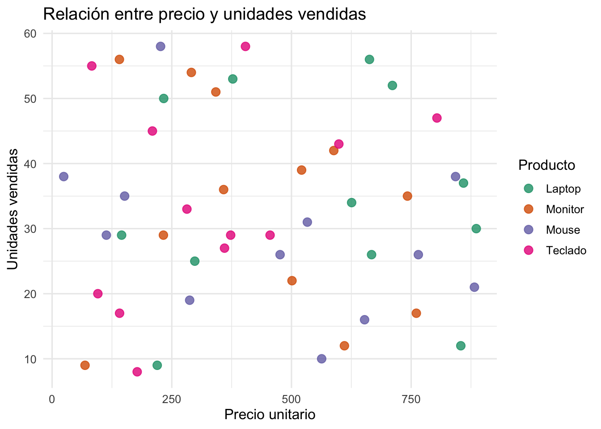
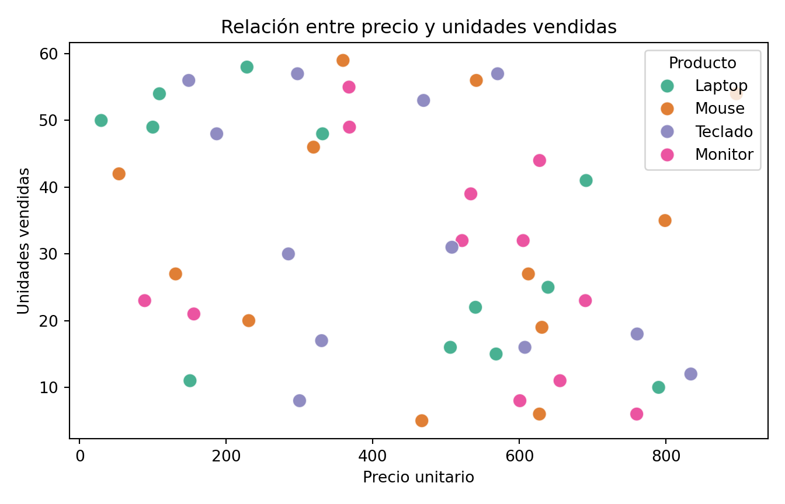
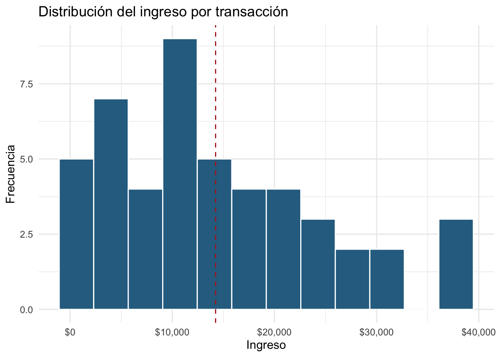
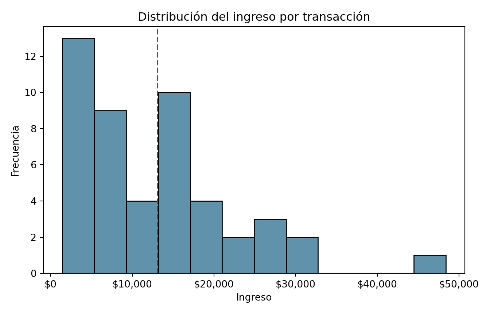

Tema 2: Limpieza y visualización de datos con R y Python
IA y Programación
Autor/a
Diego Huaraca
Fecha de publicación
2 de septiembre de 2026
Motivación
¿Por qué nos importa esto?
En la práctica, más del 70% del tiempo de un proyecto de datos se consume en limpiar y preparar la información. Por ejemplo: nombres mal escritos, fechas en formatos distintos, números guardados como texto, valores faltantes. Solo después de ese trabajo invisible** tiene sentido construir gráficos y modelos, por otro lado, un buen gráfico puede comunicar en segundos lo que una tabla de números tarda minutos en transmitir, o a su vez, puede engañar, si está mal construido. Este tema proporciona al estudiante herramientas para limpiar variables de texto, fecha y numéricas, y para construir visualizaciones de calidad profesional (estáticas y dinámicas) en R y en Python.
Objetivos de aprendizaje
Al finalizar este tema, el estudiante será capaz de:
Limpiar y transformar variables de texto, fecha y numéricas en R y Python.
Construir gráficos estáticos de alta calidad para mostrar tendencia, comparación y estructura de los datos.
Construir gráficos dinámicos (interactivos) con plotly en ambos lenguajes.
Conjunto de datos
Usaremos un mismo conjunto de datos simulado sobre ventas mensuales de una tienda a lo largo de todo el tema, para que cada técnica se vea aplicada sobre el mismo contexto.
fecha producto region unidades precio_unitario
0 2025-01-01 laptop Centro 10 789.78
1 2025-01-01 MOUSE Sur 5 466.72
2 2025-01-01 teclado Centro 16 607.34
3 2025-01-01 Monitor Centro 39 533.55
4 2025-02-01 laptop Norte 15 568.04
ventas.shape
(48, 5)
A propósito los nombres de los productos tienen espacios y mayúsculas inconsistentes: así se ven los datos “crudos” en la vida real.
Tratamiento de variables de texto
Las operaciones de texto más comunes son: quitar espacios sobrantes, unificar mayúsculas/minúsculas, detectar y reemplazar patrones (expresiones regulares), dividir cadenas y unirlas. En R, la librería stringr (funciones str_*) ofrece una sintaxis consistente; en Python se usan los métodos nativos de str o el accesor .str de pandas para trabajar columna a columna.
Las fechas deben tratarse como un tipo de dato propio (no como texto) para poder hacer operaciones como extraer el año/mes, calcular diferencias entre fechas, o filtrar por rangos. En R se usa la librería lubridate; en Python, el tipo datetime nativo y el accesor .dt de pandas.
Con variables numéricas es común: redondear, formatear para lectura humana (separadores de miles, símbolos de moneda/porcentaje), detectar valores faltantes (NA/NaN), crear flags y valores atípicos.
Ejemplo 1: A partir del dataframe ventas, crear una columna ingreso = unidades * precio_unitario, formatear el ingreso total del año como moneda (con separador de miles), y muestra en qué mes se registró el ingreso más alto.
Solución: Primero se calcula la columna derivada ingreso (operación numérica vectorizada), luego se agrega por mes usando mes (ya extraído previamente de la fecha), y finalmente, se formatea el resultado para lectura.
Interpretación del resultado: Al separar primero la fecha en columnas como mes, agregar (sumar) por esa categoría se vuelve una operación directa de una sola línea, tanto con aggregate() en R como con groupby() en Python.
Ejercicios propuestos
Ejercicio 1: Sobre el dataframe ventas, se pide:
Crear una columna de texto producto_region que combine el producto y la región en formato "Producto (Región)";
Crear una columna trimestre a partir de la fecha;
Calcular qué porcentaje del ingreso total corresponde a la región “Norte”.
Un gráfico de “calidad profesional” no es solo el tipo de gráfico correcto: incluye título, etiquetas de ejes claras, una paleta de color intencional y elimina el ruido visual innecesario. En R usaremos ggplot2; en Python, matplotlib/seaborn. Distinguimos tres propósitos:
Tendencia: cómo cambia una variable en el tiempo → gráfico de línea.
Comparación: cómo se comparan categorías entre sí → gráfico de barras o boxplot.
Estructura: cómo se relacionan o distribuyen los datos → dispersión (scatter) o histograma.
ggplot(ventas, aes(x = precio_unitario, y = unidades, color = producto)) +geom_point(size =3, alpha =0.8) +scale_color_brewer(palette ="Dark2") +labs(title ="Relación entre precio y unidades vendidas",x ="Precio unitario",y ="Unidades vendidas",color ="Producto" ) +theme_minimal(base_size =12)

fig, ax = plt.subplots(figsize=(7, 4.5))sns.scatterplot(data=ventas, x="precio_unitario", y="unidades", hue="producto", palette="Dark2", s=80, alpha=0.8, ax=ax)ax.set_title("Relación entre precio y unidades vendidas")ax.set_xlabel("Precio unitario")ax.set_ylabel("Unidades vendidas")ax.legend(title="Producto")plt.tight_layout()plt.show()

Ejercicios resueltos
Ejercicio resuelto 2
Enunciado: Construye un histograma de alta calidad que muestre la distribución del ingreso por transacción, con título, etiquetas de ejes y una línea vertical marcando el ingreso promedio.
promedio_ingreso <-mean(ventas$ingreso)ggplot(ventas, aes(x = ingreso)) +geom_histogram(bins =12, fill ="#2C6E91", color ="white") +geom_vline(xintercept = promedio_ingreso, linetype ="dashed", color ="firebrick") +scale_x_continuous(labels = scales::dollar) +labs(title ="Distribución del ingreso por transacción",x ="Ingreso",y ="Frecuencia" ) +theme_minimal(base_size =12)

promedio_ingreso = ventas["ingreso"].mean()fig, ax = plt.subplots(figsize=(7, 4.5))sns.histplot(ventas["ingreso"], bins=12, color="#2C6E91", ax=ax)ax.axvline(promedio_ingreso, color="firebrick", linestyle="--")ax.set_title("Distribución del ingreso por transacción")ax.set_xlabel("Ingreso")ax.set_ylabel("Frecuencia")ax.xaxis.set_major_formatter(mticker.FuncFormatter(lambda v, _: f"${v:,.0f}"))plt.tight_layout()plt.show()

Interpretación del resultado: Añadir una referencia visual (la línea del promedio) sobre el histograma ayuda a que el lector ubique de inmediato si la mayoría de transacciones está por encima o por debajo de ese valor, sin tener que leer la cifra exacta.
Ejercicios propuestos
Ejercicio propuesto 2
Construye: (a) un gráfico de línea de la tendencia de unidades vendidas por mes (no de ingreso); (b) un boxplot que compare el ingreso por región; (c) un gráfico de dispersión de unidades vs. ingreso, coloreado por región. Cuida título, etiquetas de ejes y paleta de color en los tres.
Un gráfico dinámico (interactivo) permite explorar los datos directamente en el navegador: hacer zoom, pasar el mouse para ver valores exactos (tooltip), o activar/desactivar categorías desde la leyenda. Es especialmente útil en material que se publica como página web (como este documento en Moodle), donde el estudiante puede interactuar con el gráfico en lugar de ver solo una imagen estática. Usaremos plotly en ambos lenguajes.
Nota: en R, plotly::ggplotly() convierte automáticamente un gráfico de ggplot2 ya construido en uno interactivo — no hay que rehacerlo desde cero. En Python, plotly.express construye el gráfico interactivo directamente, con una sintaxis muy similar a seaborn.
Ejercicios resueltos
Ejercicio resuelto 3
Enunciado: Convierte el gráfico de tendencia del ingreso mensual (sección 4.1) en una versión interactiva, mostrando en el tooltip el mes y el ingreso exacto.
Interpretación del resultado: Al pasar el mouse sobre cada punto se puede leer el valor exacto del ingreso de ese mes, algo que en la versión estática solo se podía estimar visualmente.
Ejercicios propuestos
Ejercicio propuesto 3
Construye un gráfico de barras interactivo del ingreso total por región, donde el tooltip muestre además el número de transacciones de esa región. (Pista: primero calcula ambas agregaciones —suma de ingreso y conteo— antes de graficar.)
Antes de graficar, los datos deben limpiarse: texto sin espacios/formato consistente, fechas como tipo date/datetime (no texto), y números formateados y sin faltantes sin resolver.
stringr (R) y los métodos .str (Python) cubren las operaciones de texto más comunes.
lubridate (R) y el accesor .dt (Python) permiten extraer y operar componentes de fecha fácilmente.
Todo gráfico de calidad profesional necesita: título, etiquetas de eje, paleta de color intencional y el tipo de gráfico adecuado al propósito (tendencia → línea, comparación → barras/boxplot, estructura → dispersión/histograma).
plotly permite convertir o construir gráficos interactivos en ambos lenguajes, útiles para material publicado en la web (como Moodle).